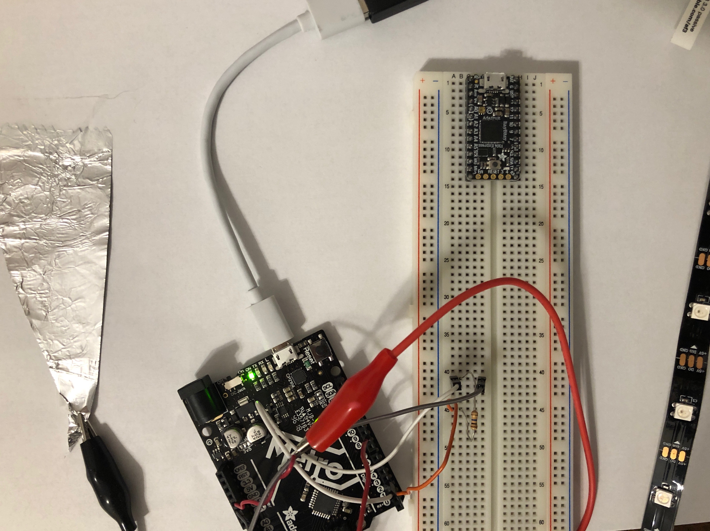
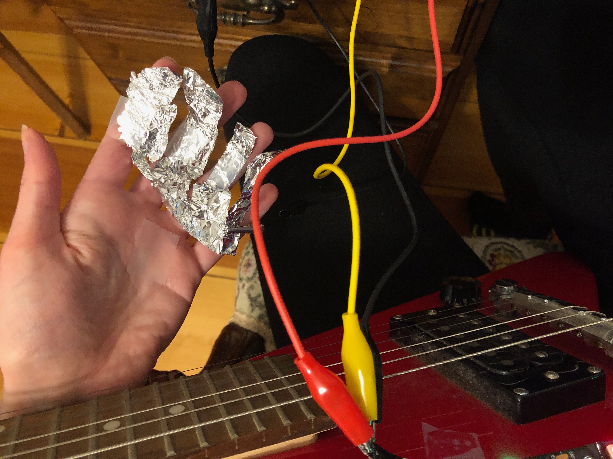
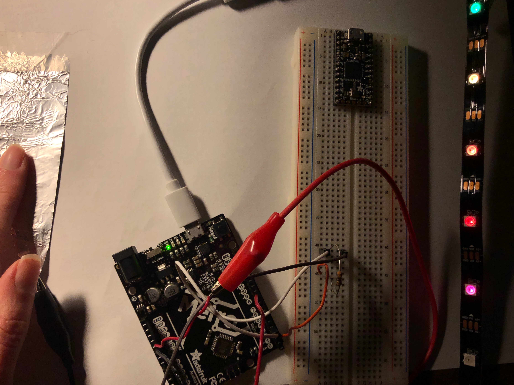

This week, we began our exciting new remote learning lifestyle as we worked with our fabrication care packages and followed tutorials made available by our team of instructors. Our task for the weekend was to use a new output device. I particularly enamored of the LED strips, so I decided to give this a go. Harkening back to our week of input devices (during which I made a capacitive piano), I wanted to use another capacitor but this time to measure distance.
I wanted to leverage the capacitor to make the LEDs in the strip fire sequentially. Basically, I was hoping that I could trace my finger and the LEDs would more or less follow. After talking with Rob, we decided that a wedge shaped capacitor would achieve this nicely. In a conservative effort (I don't have all that much copper tape!), I broke out some of my family's coveted tin foil (just a tad, don't worry!) to make my capacitor. I taped this down to some nicely insulating paper and attached that to the business end of a resistor to complete the capacitor's wiring. And I thankfully had a good number of alligator clips for this project -- who needs solder anyway! Here is my list of materials for this project:
In addition to capacitor, I also hooked up the LED strip with more alligator clips. After running the strand test to make sure everything was up to snuff, I started working on the code to link the read from the capacitor to the output on the LED strip. I tinkered with the thresholds for turning each LED in the strip on so as I ran my finger over the tinfoil triangle, the LEDs would sequentially illuminate. The graph at the right shows the serial plotter's measure as I ran my finger across the tinfoil triangle. After consulting these numbers and a great deal of trial and error, I managed to find the appropriate values to do so. Below is part of my loop which shows how I ended up breaking down the input for each LED in the strip. My full code is available for download here!
if (touch >= 0 && touch < 400) { strip.clear(); }
if (touch >= 5000) { strip.setPixelColor(1, strip.Color(r, g, b));
strip.show(); }
if (touch >= 5500) { strip.setPixelColor(2, strip.Color(255, 0, 0));
strip.show(); }
if (touch >= 6000) strip.setPixelColor(3, strip.Color(255, 100, 0));
strip.show();
if (touch >= 6500) strip.setPixelColor(4, strip.Color(225, 255, 0));
strip.show();
if (touch >= 7000) strip.setPixelColor(5, strip.Color(0, 225, 0));
strip.show();
if (touch >= 7300) strip.setPixelColor(6, strip.Color(0, 0, 225));
strip.show();
if (touch >= 7600) strip.setPixelColor(7, strip.Color(75, 0, 255));
strip.show();
if (touch >= 7900) strip.setPixelColor(8, strip.Color(148, 0, 211));
strip.show();
if (touch >= 8100) strip.setPixelColor(9, strip.Color(r, g, b));
strip.show()
As for the colors, I initially had just left them green, but eventually decided to go for a rainbow aesthetic. Because I opted for this rainbow design, which has 7 colors, I had two functional LEDs left over. I poked around and ended up making those LEDs, when triggered by the capacitor's output, oscillate randomly between many different colors with the following code. Allowing the R, G, and B input to be fully random just results in white light, I found, but this approach leads to more variety.
byte r, g, b;
r = random(256);
g = random(256-r);
b = (255-r-g);
Once the code was compiled and did what I wanted it to do, I did some fine-tuning to make proper adjustments to the code to capture the capacitor's sensitivity. Then, I decided to have some fun with this set-up and see if I could apply it to a different substrate: my tiny electric guitar. I taped the LED strip to the top of the body and tried various approaches to make the capacitance facet work. My initial attempt was to thread the foil under strings on the frets, but this just made them buzz when I played them. My next (and favorite) angle was to make "groove gloves™" as I've patented them, which was, to put it bluntly, tinfoil taped to my hands.
This would have been truly beautiful if it had worked. But alack, the mere contact with my hand at all led to all the LEDs firing, which couldn't even really be fixed by an insulator like paper due to the imperfection and slapdashery of it all. However, on I pressed, determined to have something to show for my foray into working with the guitar! In my next iteration, I put the foil on the backside of the bridge, where it would come in contact with the strings only lightly and, I hoped, would fire the LEDs when I vibrated or touched the strings. As is visible in the below video, this (sort of) worked! My set-up was very delicate so I had to phone my sister to come turn off the lights for full ambience. In the end, it was very fun to put together, and I hope I can improve (if not perfect) in future weeks. As you'll be quick to ascertain, the real challenge here was playing guitar in the dark.
